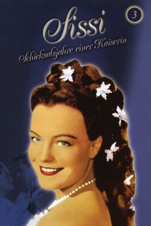

#4180 Sissi 3 - Schicksalsjahre einer Kaiserin
 
 IMDB-Wertung: 6.6 / 10
IMDB-Wertung: 6.6 / 10  Metascore: 0
Metascore: 0 
Nachdem Sissi inzwischen auch zur Kaiserin von Ungarn gekrönt wurde und das ungarische Volk ihr zu Füssen liegt, scheint alles eitel Sonnenschein. Bei Hofe sagt man Sissi eine Liaison mit dem ungarischen Grafen Andrassy nach. Da ist zwar nichts dran, aber es trübt ihr Verhältnis zu Franz Josef immerhin so sehr, dass sie junge Kaiserin eine Zeitlang zurück zu ihrer Mutter zieht. Hinzu kommt ein Lungenleiden, das sie zu längeren Auslandsaufenthalten zwingt...
Jahr: 1957
Dauer: 108 Minuten
FSK: 6
Land: Österreich Studio: UFA-FilmverleihTonspuren:
Untertitel:
Auflösung: 1080p (1920x1080) Größe: 10240 MB
Genre: Drama, Geschichte, Liebe
Regisseur: Ernst Marischka
Drehbuch: Torsten Wenzel
Soundtrack:
Darsteller:
 Romy Schneider als Empress Elisabeth of Austria / Sissi
Romy Schneider als Empress Elisabeth of Austria / Sissi Karlheinz Böhm als Emperor Franz Josef of Austria
Karlheinz Böhm als Emperor Franz Josef of Austria- Magda Schneider als Duchess Ludovika of Bavaria
 Gustav Knuth als Duke Max of Bavaria
Gustav Knuth als Duke Max of Bavaria- Walther Reyer als Graf Andrassy
- Uta Franz als Princess Helene / Nene
- Vilma Degischer als Archduchess Sophie, Franz Josef's mother
- Josef Meinrad als Oberst Böckl
- Senta Wengraf als Gräfin Bellegarde
- Erich Nikowitz als Erzherzog Franz-Karl
- Hans Ziegler als Hofrat Dr. Seeburger
- Sonia Sorel als Henriette Mendel
- Klaus Knuth als Prinz Ludwig
- Albert Rueprecht als Erzherzog Ferdinand-Max
- Peter Neusser als Graf Batthyani
- Karl Fochler als Graf Grünne
- Susanne von Almassy als
- Franca Parisi als Helena
- Ingrid Oberleitner als
- Egon von Jordan als Carlo
- Dorothea Neff als
- Erik Frey als
- Inge Holzleitner als
- Brigitte Treichler als
- Hans Unterkircher als
- Guido Wieland als
- Karl Ehmann als
- Josef Menschik als
- Frank Steinberg als
- Eve Augustin als
- Chariklia Baxevanos als
- Johannes Ferigo als Graf Czaky
- Ida Gabor als Margit
- Dolores Hubert als Kindermädchen
- Helga Jesch als Kind
- Ursula Krumml als
- Helene Lauterböck als Gräfin Esterhazy
- Silvia Leier als Kind
- Sussie Nejedly als Kind
- Herbert Prikopa als Koch
- Walter Regelsberger als Graf Windischgraetz
- Brigitte Stanzel als
- Edi Waschmann als
Datei: X:\3-Trilogie(N-Z)\Sissi\Sissi 3 - Schicksalsjahre einer Kaiserin (1957, FSK6, 1920x1080).mkv seit 28.07.2016
Festplatte: HD Collection-3(N-Z)-6(A-Z)
 Alle Filme aus Gruppe '3-Trilogie(N-Z)\Sissi'
Alle Filme aus Gruppe '3-Trilogie(N-Z)\Sissi'